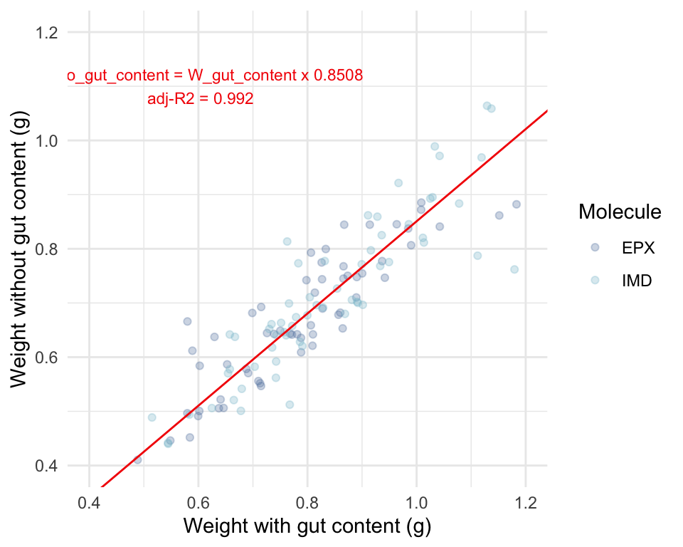

Research question: What is the kinetic of uptake and elimination of EPX and IMD in earthworms ?
Hypothese: Differences in physicochemical properties—epoxiconazole being more lipophilic and imidacloprid more hydrophilic—are expected to produce distinct toxicokinetic profiles and to result in greater bioaccumulation of epoxiconazole.
Prediction: Under co-exposure, the presence of epoxiconazole is expected to reduce the elimination rate of imidacloprid, resulting in higher tissue concentrations of this compound.
3.1 Laboratory experiment
3.1.1 Exposition of earthworms
Toxicokinetic experiments followed an adapted OECD Test Guideline 317 protocol to determine uptake and elimination rates of each pesticide in earthworms. The experimental design consisted of two sequential phases: a 21-day uptake phase where earthworms were exposed to pesticide-spiked soil, followed by a 21-day elimination phase where individuals were transferred to control soil for depuration.
Sampling was conducted at eight timepoints during each phase: days 1, 2, 3, 7, 10, 14, 17, and 21 for uptake, and days 22, 23, 24, 28, 31, 35, 38, and 42 for elimination (Figure 3.1).
Figure 3.1: Desing of the toxicokinetic experiements.
Each replicate consisted of a single earthworm maintained in an individual plastic vessel (11 cm × 7.7 cm × 4.5 cm) containing 200 g dry weight equivalent of soil adjusted to 70% water holding capacity. This design enabled individual-level measurements of both growth and internal concentrations throughout the experiment. Organisms were fed 3 g dry weight of horse dung per individual every 14 days and maintained at 18°C in a temperature-controlled environment. Individual body weights were recorded at exposure initiation and at respective sampling timepoints. At each timepoint, four individual earthworms were starved for approximately 24 hours on wet filter paper in Petri dishes to clear gut contents, then weighted and sacrificed to be stored at -80°C for subsequent chemical analysis. When the 24 hours were not enough to clear gut content, individuals were massaged to clear the remaining of the gut content.
Test concentrations were set at 100 ng/g for imidacloprid and 1000 ng/g for epoxiconazole, selected to avoid acute toxicity while ensuring analytical quantifiability. These concentrations represent environmentally relevant exposure levels, approximating maximum concentrations reported in French agricultural soils (Pelosi et al., 2021), providing an optimal balance between analytical detectability and ecological relevance.
3.1.2 Chemical analysis of soils and earthworms (HPLC-HRMS)
AJOUTER PROTOCOLES
3.2 Relationship between fresh weight and fresh weight without gut content
Since experimental data include weights with and without gut content, we established a quantitative relationship between them to allow conversion and ensure consistency across datasets.
# t1 = dernière masse avant expo == 2t1_df <- df_TK_full %>%filter(Phase !="Frozen") %>%group_by(ID) %>%filter(t ==max(t)) %>% dplyr::select(ID, w_popo = w, Molecule)# t2 = première masse pendant expo == 2t2_df <- df_TK_full %>%filter(Phase =="Frozen") %>%group_by(ID) %>% dplyr::select(ID, w_nopopo = w, Molecule)# Joindre les deux et calculer le pourcentage de pertedf_TK_fasting <- t1_df %>%inner_join(t2_df, by =c("ID", "Molecule")) %>%mutate(Per_loss =100* (w_popo - w_nopopo) / w_popo,Loss = (w_popo - w_nopopo) )
Code
#intercept <- 1.0#fit <- lm(I(x - intercept) ~ 0 + y, lin)> summary(fit)lm.fasting <-lm(w_nopopo ~ w_popo+0, data = df_TK_fasting)summary(lm.fasting)
Call:
lm(formula = w_nopopo ~ w_popo + 0, data = df_TK_fasting)
Residuals:
Min 1Q Median 3Q Max
-0.241570 -0.040104 -0.002827 0.031315 0.172545
Coefficients:
Estimate Std. Error t value Pr(>|t|)
w_popo 0.850759 0.006795 125.2 <2e-16 ***
---
Signif. codes: 0 '***' 0.001 '**' 0.01 '*' 0.05 '.' 0.1 ' ' 1
Residual standard error: 0.06349 on 125 degrees of freedom
Multiple R-squared: 0.9921, Adjusted R-squared: 0.992
F-statistic: 1.568e+04 on 1 and 125 DF, p-value: < 2.2e-16
Code
#plot(lm.fasting)ggplot(data = df_TK_fasting)+geom_point(aes(x=w_popo,y=w_nopopo,color = Molecule ),alpha =0.3 )+geom_abline(intercept =0,slope = lm.fasting$coefficients[1],color = col_red )+annotate(geom="text", x =0.6, y =1.1, label =paste0("W_no_gut_content = W_gut_content x ", signif(lm.fasting$coefficients[1],4), "\n adj-R2 = ", signif(summary(lm.fasting)$adj.r.squared, 4)), color = col_red,size =3 )+scale_color_manual(values = col_Molecule)+lims(x=c(0.4, 1.2), y=c(0.4, 1.2))+labs(x="Weight with gut content (g)",y="Weight without gut content (g)" )+theme_minimal()
Warning: Removed 4 rows containing missing values or values outside the scale range
(`geom_point()`).

Relationship between fresh weight before and after fasting.
3.2.1 Toxicokinetics modeling
3.3 One compartment model
The dynamics of internal pesticide concentrations in earthworms were first modeled using a one-compartment toxicokinetic model that explicitly accounts for growth dilution effects. In this framework, the internal concentration changes over time as a balance between uptake from soil, elimination to the external medium, and dilution by growth. This dynamic is governed by Equation 3.1.
\[\frac{dC_{\text{int}}}{dt} = \frac 1 L (k_u\ C_{\text{ext}}-k_e\ C_{\text{int}})-\frac 1 V \frac{dV}{dt}C_{\text{int}} \tag{3.1}\]
Because individual body weights were available throughout the experiment, a hierarchical model for growth was implemented on the same principle as in (gollot_2025?). The structural length of the earthworm (\(L=V^{1/3}\)) is related to the weight without gut content (\(W\)) through an allometric relationship with a 1/3 power scaling. Both structural length and internal contaminant concentration are assumed to follow probability distributions, with structural length normally distributed around a mean with a specified standard deviation, and internal concentration following a log-normal distribution. Growth in soil is described by a growth rate parameter drawn from a normal distribution, which is set to zero during fasting phases in Petri dishes, where no growth is assumed. Since experimental data include weights with and without gut content, we converted all weight in weight without gut content with the relationship established Section 3.2.
The external contaminant concentration in soil (\(C_{ext}\)) is described by first-order dissipation, parameterized by the pesticide-specific half-life (DT\(_{50}\)). For epoxiconazole (EPX) and imidacloprid (IMD), the DT\(_{50}\) values are 353.3 and 187 days, respectively. The initial concentration corresponds to the spiked soil, which decreases over time following first-order kinetics, and after 21 days is set equal to the residual concentration measured in natural soil. In Petri dishes, where no exposure occurs, \(C_{ext}\) is set to zero.
The internal contaminant concentration (\(C_{int}\)) is then modeled by a differential equation integrating three processes: (i) uptake from soil, which is proportional to Cext via the uptake rate constant (\(k_u\)); (ii) elimination from the organism, which follows first-order kinetics with rate constant (\(k_e\)); and (iii) growth dilution, expressed as a term proportional to the growth rate and the current internal concentration. This last process reduces the concentration, reflecting the increase in biomass.
For each individual i, the dynamics of body weight and internal concentration are described by Equation 3.2 and Equation 3.3. All state variables and parameters are listed Table 3.1.
\[
\begin{align}
L_i &= W_i^{1/3}\\
L_i &\sim \mathcal N (L_{i,\mu},L_{i,\sigma})\\
C_{\text{int},i} &\sim \text{log-}\mathcal N (C_{\text{int},\mu},C_{\text{int},\sigma})\\
a_i &\sim \mathcal N (a_{i,\mu},a_{i,\sigma})\\
\end{align}
\tag{3.2}\]
Because epoxiconazole is a lipophilic substance, a two-compartment model, built upon the one-compartment model, was also tested. In this extended representation, the earthworm body is considered as consisting of a central compartment (e.g., blood or well-perfused tissues) and a peripheral compartment (e.g., storage or poorly perfused tissues), with bidirectional exchanges between them. Uptake from soil occurs only into the central compartment, from which the substance can either be eliminated to the external medium or distributed to the peripheral compartment. The peripheral compartment acts as a storage site that can delay elimination and buffer fluctuations in exposure, which is particularly relevant for hydrophobic compounds expected to partition into lipid-rich tissues. Such a structure allows us to account for a biphasic accumulation and elimination pattern, typically characterized by a fast initial phase driven by the central compartment and a slower phase reflecting the exchange with the peripheral compartment. The internal concentration is now described by Equation 3.4, where the dynamics of the central and peripheral compartments are jointly expressed, enabling a more mechanistic representation of toxicokinetics for lipophilic pesticides in earthworms.
3.5 Exposure through gut content while in Petri dishes ?
Before freezing, earthworms were transferred to Petri dishes lined with moist filter paper for about a day to allow gut clearance and to avoid measuring soil residues in the digestive tract. During this depuration period, worms were no longer in direct contact with contaminated soil; however, residual dietary exposure may still occur due to the ingestion of contaminated soil particles retained in the gut. This exposure pathway is considered negligible for hydrophilic compounds (i.e. imidacloprid) but can represent a significant fraction of the total uptake for hydrophobic substances (log Kow > 4.5), with reported contributions ranging from 15 to 40% (belfroid_1995?; jager_2003a?). Epoxiconazole is moderately hydrophobic (log Kow = 3.3), for which little information is available.
To evaluate the potential influence of this pathway, we tested alternative model scenarios assuming a digestive contribution of 0%, 15%, and 30% of the total uptake. Depuration of the earthworm gut content was modeled as a first-order decay (Equation 3.5), informed by a small supporting experiment: ten earthworms were kept individually in 200 g of Closeaux soil with 3 g of horse dung for one week, then transferred to Petri dishes lined with moist filter paper and weighed at regular intervals. After 32 hours, the worms were gently massaged to void the remaining gut contents and weighed again, providing data to estimate the gut-clearance rate.
\(P_{Weight}\) : Percentage of initial weight (%, 0-100)
\(P^{\infty}_{Weight}\) : Percentage of initial weight when gut is fully emptied (%)
\(DT_{50,\text{gut}}\) : Half-life of the gut content (h)
For the model, we consider that weights measured after massage are weights measured after a significant amount of time has passed. Therefore, the corresponding percentages of initial weight inform \(P^{\infty}_{Weight}\).
Figure 3.2: Evolution of earthworm weight and the corresponding percentage of initial weight throughout time in Petri dishes. Weight after being massaged are described with squared points.
Figure 3.3: Modeling of the evolution of earthworm percentage of initial weight throughout time in Petri dishes. The grey line correspond to the prediction of the model.
Table 3.1: State variables and parameters list.
Symbol
Code Symbol
Description
Unit
\(W\)
Weight
Weight of the earthworm without gut content
g(worm)
\(L\)
L
Volumetric length of the earthworm
g1/3(worm)
\(L_0\)
L0
Volumetric length of the earthworm at the start of the experiment
g1/3(worm)
\(a\)
a_growth
Growth rate of the earthworm in soil
g1/3(worm)·d⁻¹
\(C_{\text{ext}}\)
CeEPX or CeIMD
Soil concentration of contaminant
\(C_{\text{ext}}^{0}\)
Ce0EPX or Ce0IMD
Soil concentration of contaminant at the start of the experiment
ng·g(soil)⁻¹
\(C_{\text{clx}}^0\)
Cclx0
Natural soil concentration in contaminant
ng·g(soil)⁻¹
\(DT_{50}\)
DT50EPX or DT50IMD
Half-life of the contaminant in soil
d⁻¹
\(DT_{50,\text{depuration}}\)
DT50gut
Half-life of the gut content in Petri dishes
d⁻¹
\(\varphi\)
phi
Fraction of the uptake that is due to gut content
–
\(C_{\text{int}}\)
CiEPX or CiIMD
Concentration of contaminant in earthworm
ng·g(worm)⁻¹
\(C_{\text{int}}^0\)
Ci0EPX or Ci0IMD
Concentration of contaminant in earthworm at the start of the experiment
ng·g(worm)⁻¹
\(k_u\)
ku
Uptake rate of the contaminant by earthworm from soil
cm·g(soil)·g(worm)⁻¹·d⁻¹
\(k_e\)
ke
Elimination rate of the contaminant by earthworm
cm·d⁻¹
3.6 Priors used
Large and weakly informative priors were assigned to the toxicokinetic rate constants in order to cover a wide range of plausible values. Specifically, the uptake (\(k_u\)), elimination (\(k_e\)), and inter-compartmental exchange rates (\(k_{periph}\)) were given log-uniform priors between 10\(^{−5}\) and 10\(^5\), ensuring that the posterior estimates would be primarily informed by the data rather than overly restrictive assumptions. For the growth process, truncated normal priors were specified for both the mean growth rate and its inter-individual variation, reflecting prior biological knowledge of adult earthworm growth while avoiding unrealistic values. Measurement processes were also integrated in the model: observed body weights were assigned truncated normal distributions to ensure positivity and consistency with biological constraints, while internal concentrations were assumed to follow truncated log-normal distributions, which are more appropriate for right-skewed data and guarantee non-negative values.
3.7 Model implementation
Model calibration was performed with a bayesian inference software, MCSim, using 3 chains and 100 000. Posterior distributions were drawn using the last 10 000 iterations of each chain. Other statistical analyses were performed using the software R.
Pelosi, C., Thiel, P., Bart, S., Amossé, J., Jean-Jacques, J., Thoisy, J.-C., & Crouzet, O. (2021). The contributions of enchytraeids and earthworms to the soil mineralization process in soils with fungicide. Ecotoxicology, 30(9), 1910–1921. https://doi.org/10.1007/s10646-021-02452-z
Source Code
```{r, include=F}library(here)source(file = here::here("functions/fun.R"))f_load_libraries_colors()col_Molecule <- rev(col_Molecule)```# Materiel & Methods**Research question:** What is the kinetic of uptake and elimination of EPX and IMD in earthworms ?**Hypothese:** Differences in physicochemical properties—epoxiconazole being more lipophilic and imidacloprid more hydrophilic—are expected to produce distinct toxicokinetic profiles and to result in greater bioaccumulation of epoxiconazole.**Prediction:** Under co-exposure, the presence of epoxiconazole is expected to reduce the elimination rate of imidacloprid, resulting in higher tissue concentrations of this compound.## Laboratory experiment### Exposition of earthwormsToxicokinetic experiments followed an adapted OECD Test Guideline 317 protocol to determine uptake and elimination rates of each pesticide in earthworms. The experimental design consisted of two sequential phases: a 21-day uptake phase where earthworms were exposed to pesticide-spiked soil, followed by a 21-day elimination phase where individuals were transferred to control soil for depuration.Sampling was conducted at eight timepoints during each phase: days 1, 2, 3, 7, 10, 14, 17, and 21 for uptake, and days 22, 23, 24, 28, 31, 35, 38, and 42 for elimination (@fig-TKdesign).```{r, warning=F, message=F}#| fig-cap: Desing of the toxicokinetic experiements.#| label: fig-TKdesign#| fig-width: 6#| fig-height: 3t_elim <- 21t <- seq(0,t_elim*2,0.01)C0 <- 0C_soil <- 10C_soil <- 1000ks <- 0.1ke <- 1fdata <- function(t, state, parameters) { with(as.list(c(state, parameters)), { if(t<21){dl <- ks*C_soil-ke*state[1]}else{dl <- -ke*state[1]} list(c(dl)) }) }# Initial conditioninit_var <- c(C0)# Parameters and timeparams <- c( ks=ks, ke=ke, C_soil=C_soil )# Resolutionsol_fdata <- ode( y=init_var, times=t, func=fdata, parms=params )sim_data_ex <- data.frame( t= sol_fdata[,1], Cworm = sol_fdata[,2] )sim_data_ex_up <- sim_data_ex[sim_data_ex$t<=t_elim,]sim_data_ex_elim <- sim_data_ex[sim_data_ex$t>=t_elim,]times_uptake <- c(1, 2, 3, 7, 10, 14, 17, 21)times_elim <- c(22, 23, 24, 28, 31, 35, 38, 42)times_points <- c(times_uptake, times_elim)sim_data_points <- sim_data_ex[sim_data_ex$t %in% times_points,]p <- ggplot()+ geom_line( aes( x=sim_data_ex_up$t, y=sim_data_ex_up$Cworm ), color=col_uptake, linewidth=2 )+ geom_line( aes( x=sim_data_ex_elim$t, y=sim_data_ex_elim$Cworm ), color=col_elim, linewidth=2 )+ geom_point( aes( x=sim_data_points$t, y=sim_data_points$Cworm ), cex=3 )+ geom_label_repel( aes(x=sim_data_points$t, y=sim_data_points$Cworm, label = sim_data_points$t ), box.padding = 0.35, point.padding = 0.5, segment.color = Nord_polar[1] )+ annotate( "text", x=t_elim/2, y=min(sim_data_ex$Cworm), colour=col_uptake, label="Uptake", fontface="bold" )+ annotate( "text", x=t_elim*1.5, y=max(sim_data_ex$Cworm), colour=col_elim, label="Elimination", fontface="bold" )+ labs(x="Time (d)", y=expression(paste("Concentration in earthworm")))+ theme_bw()+ theme( legend.position = "right", legend.title=element_text(size=sizetitle-2,face="bold"), title=element_text(size=sizetitle, face="bold"), axis.title.x = element_text(size=sizetitle,face="plain"), axis.title.y = element_text(size=sizetitle,face="plain") )p``````{r, include=F}ggsave( filename="TK_design.png", plot=p, width=8, height = 4, path=here::here("fig/TK_single") )```Each replicate consisted of a single earthworm maintained in an individual plastic vessel (11 cm × 7.7 cm × 4.5 cm) containing 200 g dry weight equivalent of soil adjusted to 70% water holding capacity. This design enabled individual-level measurements of both growth and internal concentrations throughout the experiment. Organisms were fed 3 g dry weight of horse dung per individual every 14 days and maintained at 18°C in a temperature-controlled environment. Individual body weights were recorded at exposure initiation and at respective sampling timepoints. At each timepoint, four individual earthworms were starved for approximately 24 hours on wet filter paper in Petri dishes to clear gut contents, then weighted and sacrificed to be stored at -80°C for subsequent chemical analysis. When the 24 hours were not enough to clear gut content, individuals were massaged to clear the remaining of the gut content.Test concentrations were set at 100 ng/g for imidacloprid and 1000 ng/g for epoxiconazole, selected to avoid acute toxicity while ensuring analytical quantifiability. These concentrations represent environmentally relevant exposure levels, approximating maximum concentrations reported in French agricultural soils [@pelosi_2021], providing an optimal balance between analytical detectability and ecological relevance.### Chemical analysis of soils and earthworms (HPLC-HRMS)AJOUTER PROTOCOLES## Relationship between fresh weight and fresh weight without gut content {#sec-gutcontent}Since experimental data include weights with and without gut content, we established a quantitative relationship between them to allow conversion and ensure consistency across datasets.```{r}df_TK_full <-read_excel(here::here("data/Data_TK_long.xlsx")) |>mutate(Time_point_f =as.factor(Time_point),ID =as.factor(ID),w = w/1000, # Conversion mg to gDose = Dose*1000, # mg/kg to ng/g (mg/kg = microg/g = 1000 ng/g),CiIMD = C_worm_IMD,CiEPX = C_worm_EPX ) |>mutate(C_soil_IMD =case_when( t ==0& ID_recipient =="1"~0.089, # ng/g t ==0& ID_recipient =="2"~0.072# ng/g ),C_soil_EPX =case_when( t ==0& ID_recipient =="1"~0.780, # ng/g t ==0& ID_recipient =="2"~1.070# ng/g ) ) |>mutate(expo =case_when( Phase =="Uptake"~1, Phase =="Elimination"~0, Phase =="Frozen"~2 ) ) |>filter(Keep =="Yes") |>group_by(ID) |>mutate(t =as.numeric(difftime(Date, first(Date), units ="days"))) |> dplyr::ungroup()``````{r, warning=F, message=F}# t1 = dernière masse avant expo == 2t1_df <- df_TK_full %>% filter(Phase != "Frozen") %>% group_by(ID) %>% filter(t == max(t)) %>% dplyr::select(ID, w_popo = w, Molecule)# t2 = première masse pendant expo == 2t2_df <- df_TK_full %>% filter(Phase == "Frozen") %>% group_by(ID) %>% dplyr::select(ID, w_nopopo = w, Molecule)# Joindre les deux et calculer le pourcentage de pertedf_TK_fasting <- t1_df %>% inner_join(t2_df, by = c("ID", "Molecule")) %>% mutate( Per_loss = 100 * (w_popo - w_nopopo) / w_popo, Loss = (w_popo - w_nopopo) )``````{r}#| fig-cap: Relationship between fresh weight before and after fasting. #| fig-label: fig-Wfasting#| fig-width: 5#| fig-height: 4#intercept <- 1.0#fit <- lm(I(x - intercept) ~ 0 + y, lin)> summary(fit)lm.fasting <-lm(w_nopopo ~ w_popo+0, data = df_TK_fasting)summary(lm.fasting)#plot(lm.fasting)ggplot(data = df_TK_fasting)+geom_point(aes(x=w_popo,y=w_nopopo,color = Molecule ),alpha =0.3 )+geom_abline(intercept =0,slope = lm.fasting$coefficients[1],color = col_red )+annotate(geom="text", x =0.6, y =1.1, label =paste0("W_no_gut_content = W_gut_content x ", signif(lm.fasting$coefficients[1],4), "\n adj-R2 = ", signif(summary(lm.fasting)$adj.r.squared, 4)), color = col_red,size =3 )+scale_color_manual(values = col_Molecule)+lims(x=c(0.4, 1.2), y=c(0.4, 1.2))+labs(x="Weight with gut content (g)",y="Weight without gut content (g)" )+theme_minimal()```### Toxicokinetics modeling## One compartment modelThe dynamics of internal pesticide concentrations in earthworms were first modeled using a one-compartment toxicokinetic model that explicitly accounts for growth dilution effects. In this framework, the internal concentration changes over time as a balance between uptake from soil, elimination to the external medium, and dilution by growth. This dynamic is governed by @eq-TKsimple.$$\frac{dC_{\text{int}}}{dt} = \frac 1 L (k_u\ C_{\text{ext}}-k_e\ C_{\text{int}})-\frac 1 V \frac{dV}{dt}C_{\text{int}}$$ {#eq-TKsimple}Because individual body weights were available throughout the experiment, a hierarchical model for growth was implemented on the same principle as in @gollot_2025. The structural length of the earthworm ($L=V^{1/3}$) is related to the weight without gut content ($W$) through an allometric relationship with a 1/3 power scaling. Both structural length and internal contaminant concentration are assumed to follow probability distributions, with structural length normally distributed around a mean with a specified standard deviation, and internal concentration following a log-normal distribution. Growth in soil is described by a growth rate parameter drawn from a normal distribution, which is set to zero during fasting phases in Petri dishes, where no growth is assumed. Since experimental data include weights with and without gut content, we converted all weight in weight without gut content with the relationship established @sec-gutcontent.The external contaminant concentration in soil ($C_{ext}$) is described by first-order dissipation, parameterized by the pesticide-specific half-life (DT$_{50}$). For epoxiconazole (EPX) and imidacloprid (IMD), the DT$_{50}$ values are 353.3 and 187 days, respectively. The initial concentration corresponds to the spiked soil, which decreases over time following first-order kinetics, and after 21 days is set equal to the residual concentration measured in natural soil. In Petri dishes, where no exposure occurs, $C_{ext}$ is set to zero.The internal contaminant concentration ($C_{int}$) is then modeled by a differential equation integrating three processes: (i) uptake from soil, which is proportional to Cext via the uptake rate constant ($k_u$); (ii) elimination from the organism, which follows first-order kinetics with rate constant ($k_e$); and (iii) growth dilution, expressed as a term proportional to the growth rate and the current internal concentration. This last process reduces the concentration, reflecting the increase in biomass.For each individual i, the dynamics of body weight and internal concentration are described by @eq-distrib and @eq-1comp. All state variables and parameters are listed @tbl-Variables.$$\begin{align}L_i &= W_i^{1/3}\\L_i &\sim \mathcal N (L_{i,\mu},L_{i,\sigma})\\C_{\text{int},i} &\sim \text{log-}\mathcal N (C_{\text{int},\mu},C_{\text{int},\sigma})\\a_i &\sim \mathcal N (a_{i,\mu},a_{i,\sigma})\\\end{align}$$ {#eq-distrib}$$\begin{align}\frac{dL_{i,\mu}}{dt} &= \begin{cases} a_i, & \text{if in soil}\\ 0, & \text{if in Petri dishes} \end{cases} & & \text{with } L_i(0) = L_{0,i} \\[1ex]\frac{dC_{\text{ext}}}{dt} &= -\frac{\ln 2}{DT_{50}}\, C_{\text{ext}} & & \text{with } \begin{cases} C_{\text{ext}}(0) = C_{\text{ext}}^{0}\\ C_{\text{ext}}(21\ \mathrm{days}) = C_{\text{Clx}}^{0} \end{cases} \\[1ex]\frac{dC_{\text{int},\mu}}{dt} &= \frac{1}{L_{i,\mu}}\bigl(k_u C_{\text{ext}}-k_e C_{\text{int},\mu}\bigr) -\frac{3a_i}{L_{i,\mu}} C_{\text{int},\mu} & & \text{with } C_{\text{int},\mu}(0) = C_{\text{int}}^{0}\end{align}$$ {#eq-1comp}## Two-compartment modelBecause epoxiconazole is a lipophilic substance, a two-compartment model, built upon the one-compartment model, was also tested. In this extended representation, the earthworm body is considered as consisting of a central compartment (e.g., blood or well-perfused tissues) and a peripheral compartment (e.g., storage or poorly perfused tissues), with bidirectional exchanges between them. Uptake from soil occurs only into the central compartment, from which the substance can either be eliminated to the external medium or distributed to the peripheral compartment. The peripheral compartment acts as a storage site that can delay elimination and buffer fluctuations in exposure, which is particularly relevant for hydrophobic compounds expected to partition into lipid-rich tissues. Such a structure allows us to account for a biphasic accumulation and elimination pattern, typically characterized by a fast initial phase driven by the central compartment and a slower phase reflecting the exchange with the peripheral compartment. The internal concentration is now described by @eq-2comp, where the dynamics of the central and peripheral compartments are jointly expressed, enabling a more mechanistic representation of toxicokinetics for lipophilic pesticides in earthworms.$$\begin{aligned}& C_{\text{int},\mu} = C_{\text{int,central},\mu} + C_{\text{int,periph},\mu}\\\\&\frac{dC_{\text{int,central},\mu}}{dt} = \frac{1}{L_{i,\mu}} (k_u\ C_{\text{ext}}-k_e\ C_{\text{int,central},\mu}+k_{periph}\ C_{\text{int,periph},\mu}-k_{periph}\ C_{\text{int,central},\mu})-\frac{3a_i}{L_{i,\mu}}C_{\text{int,central},\mu}, \\&\text{ with}\ \ C_{\text{int,central},\mu}(t=0) = \frac 1 2 C_{\text{int},\mu}^0\\\\&\frac{dC_{\text{int,periph},\mu}}{dt} = \frac{1}{L_{i,\mu}} (k_{periph}\ C_{\text{int,central},\mu}-k_{periph}\ C_{\text{int,periph},\mu})-\frac{3a_i}{L_{i,\mu}}C_{\text{int,periph},\mu}, \\&\text{ with}\ \ C_{\text{int,periph},\mu}(t=0) = \frac 1 2 C_{\text{int},\mu}^0\end{aligned}$$ {#eq-2comp}## Exposure through gut content while in Petri dishes ?Before freezing, earthworms were transferred to Petri dishes lined with moist filter paper for about a day to allow gut clearance and to avoid measuring soil residues in the digestive tract. During this depuration period, worms were no longer in direct contact with contaminated soil; however, residual dietary exposure may still occur due to the ingestion of contaminated soil particles retained in the gut. This exposure pathway is considered negligible for hydrophilic compounds (i.e. imidacloprid) but can represent a significant fraction of the total uptake for hydrophobic substances (log Kow \> 4.5), with reported contributions ranging from 15 to 40% [@belfroid_1995; @jager_2003a]. Epoxiconazole is moderately hydrophobic (log Kow = 3.3), for which little information is available.To evaluate the potential influence of this pathway, we tested alternative model scenarios assuming a digestive contribution of 0%, 15%, and 30% of the total uptake. Depuration of the earthworm gut content was modeled as a first-order decay (@eq-GUT), informed by a small supporting experiment: ten earthworms were kept individually in 200 g of Closeaux soil with 3 g of horse dung for one week, then transferred to Petri dishes lined with moist filter paper and weighed at regular intervals. After 32 hours, the worms were gently massaged to void the remaining gut contents and weighed again, providing data to estimate the gut-clearance rate.$$\frac{dP_{Weight}}{dt}=-\frac{\ln 2}{DT_{50,\text{gut}}}\ (P_{Weight}-P^{\infty}_{Weight})$$ {#eq-GUT}$$P_{Weight}=P^{\infty}_{Weight}+(100-P^{\infty}_{Weight})\ \exp\left(- \frac{\ln 2}{DT_{50,\text{gut}}}\times t\right)$$With :- $t$ : Time (h)- $P_{Weight}$ : Percentage of initial weight (%, 0-100)- $P^{\infty}_{Weight}$ : Percentage of initial weight when gut is fully emptied (%)- $DT_{50,\text{gut}}$ : Half-life of the gut content (h)For the model, we consider that weights measured after massage are weights measured after a significant amount of time has passed. Therefore, the corresponding percentages of initial weight inform $P^{\infty}_{Weight}$.The results are shown @fig-GUT.```{r data gut, message=F, warning=F}df_gut <- read_excel(here::here("data/Data_GUT.xlsx")) |> mutate( ID = as.factor(ID) ) |> group_by(ID) |> mutate( Per_Weight = 100 * Weight / Weight[t == 0] ) |> ungroup()``````{r, message=F, warning=F}#| fig-cap: Evolution of earthworm weight and the corresponding percentage of initial weight throughout time in Petri dishes. Weight after being massaged are described with squared points.#| label: fig-GUT#| fig-height: 4#| fig-width: 8p_mg <- ggplot( data = df_gut, aes( x = t, y = Weight, color = ID, shape = Handling ))+ geom_line( linewidth = 0.8, alpha = 0.8 )+ geom_point( alpha = 0.5, size = 2.5 )+ labs( x = "Time (hours)", y = "Weight (mg)" )+ scale_color_manual(values = c(Nord_aurora, Nord_frost, Nord_polar))+ scale_shape_manual(values = shape_Molecule)+ theme_minimal()p_per <- ggplot( data = df_gut, aes( x = t, y = Per_Weight, color = ID, shape = Handling ))+ geom_line( linewidth = 0.8, alpha = 0.8 )+ geom_point( alpha = 0.5, size = 2.5 )+ labs( x = "Time (hours)", y = "Percentage of initial weight (%)" )+ ylim(50, NA)+ scale_color_manual(values = c(Nord_aurora, Nord_frost, Nord_polar))+ scale_shape_manual(values = shape_Molecule)+ theme_minimal()p <- p_mg + p_per + plot_layout(ncol=2, guides="collect")p``````{r modgut, message=F, warning=F}df_gut_mod <- df_gut |> mutate( t = case_when( Handling == "None" ~ t, Handling == "Massaged" ~ 1000 ) )mod.gut <- nlsLM(Per_Weight ~ Per_Weight_void + (100-Per_Weight_void)*exp(-lambda*t), data = df_gut_mod, start = list( Per_Weight_void = 15, lambda = 0.01 ), lower = c(0,0), upper = c(Inf,Inf) )summary(mod.gut)cat("95% confidence intervals\n")confint2(mod.gut, level = 0.95)DT50_gut <- signif(as.numeric(log(2)/ coef(mod.gut)["lambda"]), 3)Per_Weight_void <- signif(as.numeric(coef(mod.gut)["Per_Weight_void"]), 3)df_gut_mod_plot <- df_gut_mod |> filter(Handling == "None")df_gut_mod_plot$Per_Weight_pred <- predict(mod.gut, newdata = df_gut_mod_plot)```The estimated value for $DT_{50,\text{gut}}$ and $P^{\infty}_{Weight}$ are `r DT50_gut` hours and `r Per_Weight_void`%, respectively.$P^{\infty}_{Weight}$ estimated here is consistent with the one estimated in @sec-gutcontent.```{r}#| fig-cap: Modeling of the evolution of earthworm percentage of initial weight throughout time in Petri dishes. The grey line correspond to the prediction of the model. #| label: fig-GUTmod#| fig-height: 4#| fig-width: 6p_mod <-ggplot(data = df_gut_mod_plot, aes(x = t,y = Per_Weight,group = ID ))+geom_line(linewidth =0.8,alpha =0.5,color = Nord_frost[4] )+geom_point(alpha =0.5,size =2.5,color = Nord_frost[4] )+geom_line(data = df_gut_mod_plot, aes(x = t, y = Per_Weight_pred ),linewidth =2,color = Nord_polar[2],alpha =0.2 )+labs(x ="Time (hours)",y ="Percentage of initial weight (%)" )+scale_color_manual(values =c(Nord_aurora, Nord_frost, Nord_polar))+theme_minimal()p_mod```| Symbol | Code Symbol | Description | Unit ||----|----|----|----|| $W$ | `Weight` | Weight of the earthworm without gut content | g(worm) || $L$ | `L` | Volumetric length of the earthworm | g<sup>1/3</sup>(worm) || $L_0$ | `L0` | Volumetric length of the earthworm at the start of the experiment | g<sup>1/3</sup>(worm) || $a$ | `a_growth` | Growth rate of the earthworm in soil | g<sup>1/3</sup>(worm)·d⁻¹ || $C_{\text{ext}}$ | `CeEPX` or `CeIMD` | | Soil concentration of contaminant || $C_{\text{ext}}^{0}$ | `Ce0EPX` or `Ce0IMD` | Soil concentration of contaminant at the start of the experiment | ng·g(soil)⁻¹ || $C_{\text{clx}}^0$ | Cclx0 | Natural soil concentration in contaminant | ng·g(soil)⁻¹ || $DT_{50}$ | `DT50EPX` or `DT50IMD` | Half-life of the contaminant in soil | d⁻¹ || $DT_{50,\text{depuration}}$ | `DT50gut` | Half-life of the gut content in Petri dishes | d⁻¹ || $\varphi$ | `phi` | Fraction of the uptake that is due to gut content | – || $C_{\text{int}}$ | `CiEPX` or `CiIMD` | Concentration of contaminant in earthworm | ng·g(worm)⁻¹ || $C_{\text{int}}^0$ | `Ci0EPX` or `Ci0IMD` | Concentration of contaminant in earthworm at the start of the experiment | ng·g(worm)⁻¹ || $k_u$ | `ku` | Uptake rate of the contaminant by earthworm from soil | cm·g(soil)·g(worm)⁻¹·d⁻¹ || $k_e$ | `ke` | Elimination rate of the contaminant by earthworm | cm·d⁻¹ |: State variables and parameters list. {#tbl-Variables}## Priors usedLarge and weakly informative priors were assigned to the toxicokinetic rate constants in order to cover a wide range of plausible values. Specifically, the uptake ($k_u$), elimination ($k_e$), and inter-compartmental exchange rates ($k_{periph}$) were given log-uniform priors between 10$^{−5}$ and 10$^5$, ensuring that the posterior estimates would be primarily informed by the data rather than overly restrictive assumptions. For the growth process, truncated normal priors were specified for both the mean growth rate and its inter-individual variation, reflecting prior biological knowledge of adult earthworm growth while avoiding unrealistic values. Measurement processes were also integrated in the model: observed body weights were assigned truncated normal distributions to ensure positivity and consistency with biological constraints, while internal concentrations were assumed to follow truncated log-normal distributions, which are more appropriate for right-skewed data and guarantee non-negative values.## Model implementationModel calibration was performed with a bayesian inference software, MCSim, using 3 chains and 100 000. Posterior distributions were drawn using the last 10 000 iterations of each chain. Other statistical analyses were performed using the software R.